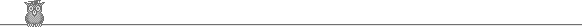

OWL

OWL stands for Object Windows Library. It is a C++ framework for developing 16- and 32-bit
Windows GUI applications. In my opinion OWL is better designed, more object-oriented, and more powerful than MFC.
The bad news is that Borland discontinued the Borland C++/OWL
line and switched to C++ Builder/VCL.
A short history of OWL versions:
- OWL 1.0
- First version of OWL. For handling windows messages uses Dynamic Dispatch Virtual Tables,
a non-portable Borland extension to C++.
- OWL 2.0
- Switches to Response Table macros for handling messages.
- OWL 2.5
- Adds OCF for developing OLE-enabled applications.
- OWL 5.0
- Adds new classes for the new Win32 common controls. Change from the old
typedef-ed BOOL to the new C++ type bool.
- OWL 6.0
- A freeware upgrade to OWL maintained by Yura Bidus. Read more about it here.
Here is a list of OWL-related pages:
- OWL Next
- OWL Next project by Yura Bidus. Also contains articles and FAQs concerning OWL.
- Experts Exchange
- Experts Exchange OWL Section
- How hard is it to get my OWL application to compile with C++Builder 5?
- Article on Borland Developer's Network
- OWL HOW
- OWL HOW - lots of articles, tips, tricks, tutorials and contributions. Too many to list here.
- OWL Mailing List
- An OWL mailing list archive. Some of the topics on the site are:
- Using the The Standard Template Library with Borland C++.
- A downloadable OWL FAQ.
- Geordie's Code Samples
- Contains OWL/VCL section contains examples for owner-drawn radio buttons;
changing window and control background; dialog accelerator keys; command enabling, menu descriptors;
owner-drawn list boxes; decorated windows.
- Alan Chambers programming page
- A screen-saver, OpenGL Rubik Cube and several small classes.
- SoftEngage OWL site
- Dieter Windau's OWL page. Contains OWL classes, resources, tips
- Jo Parrello's home page
- OWL classes and FAQs.
- OWL Sock
- OWL socket library.
- Scott Heiman's web site
- Information how to use DirectX and OpenGL with Borland C++.
- Dr John Maddock's home page
- OLE Proxy Wizard, RegEx++ - template regular expression library.
- Luigi Bianchi's web site
- DFM2API utility for converting C++ Builder/Delphi forms to standard API resource file and C code;
OWL classes - spinner control, color picker dialog, property dialog.
- Elias Fotinis' web site
- Some OWLNext sources - DDE file opening, Monochrome BMP data converter.
- OWL and GCC page
- Information about OWLNext and GCC.
- TCellSheet
- Powerful open source Spreadsheet class for Borland C++.
- Publications by Ted Faison
- OWL vs MFC comparison, OLE programming, ObjectScripting and other publications.
- Pete Aldridge's page
- C++ OWL Tutorials, Examples, Source.
 Back to main
Back to main